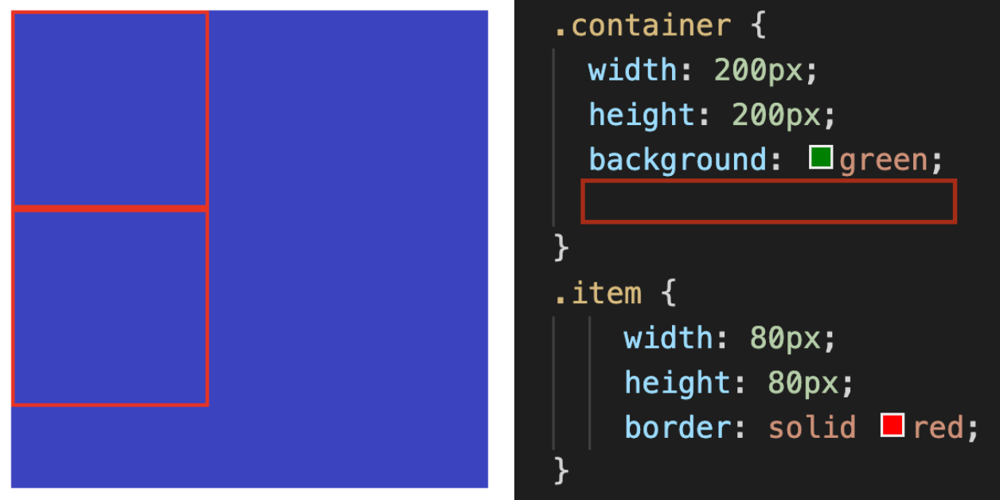

제 1 교시
2022년도 대학수학능력시험
프론트엔드 영역
짝수형
4 지 선 다 형
1. 쉘을 이용하여 파일을 생성할 때 명령어로 옳은 것은?
1. mkdir
2. echo
3. mv
4. touch
2. commit한 이전 코드를 취소하는 git 명령어로 옳은 것은?
1. git fetch
2. git reset --hard HEAD^
3. git reset --soft
4. git stash
3. 요소 margin에 대한 설명으로 옳은 것은?
1. margin-height: 50%; 이면 박스의 세로너비가 아닌 가로너비의 50%만큼 적용된다.
2. margin: 1 2 3 4px; 이면 상:1px 하:2px 좌:3px 우:4px 이다.
3. margin: 10 20; 이면 좌우 10px, 상하 20px이다.
4. 박스내부의 너비를 제어할 수 있다.
4. 밑의 그림에서 빨간 선으로 둘러쌓인 박스를 위로 정렬을 하려면 빈칸에 어떤 코드를 넣어야 하는가? (빨간박스의 클래스는 item, 보라색박스의 클래스는 container)

1. margin-height: 50%; 이면 박스의 세로너비가 아닌 가로너비의 50%만큼 적용된다.
2. margin: 1 2 3 4px; 이면 상:1px 하:2px 좌:3px 우:4px 이다.
3. margin: 10 20; 이면 좌우 10px, 상하 20px이다.
4. 박스내부의 너비를 제어할 수 있다.
5. CSS선택자 점수로 올바르지 않은 것은?
1. 전체선택자 ex)*{color:red} -> 1점
2. class선택자 ex).exmaple{color:red} -> 10점
3. id선택자 ex)#abc{color:red} -> 100점
4. html문서 tag내에 명시 ex)p style="color:red" -> 1000점
6. 다음중 인라인 요소는 무엇인가
1. span
2. p
3. div
4. article
7. 마우스 커서가 해당 요소위에 올라가있을 경우 선택, 혹은 활성화를 시키는 클래스는?
1. click
2. hover
3. issue
4. rest
8. input요소의 속성으로 올바르지 않은 것은?
1. checkbox
2. radio
3. button
4. content